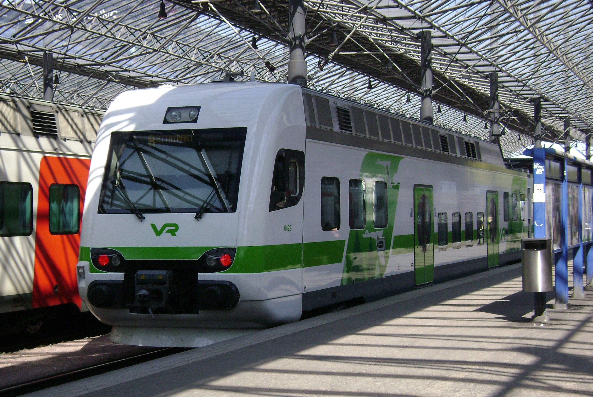

Helsinki–Lahti -rata on Suomen nopein rataosuus, ja se on tärkeä yhteys pääkaupunkiseudun ja Lahden välillä. Rataosuus on noin 100 kilometriä pitkä, ja sen varrella on useita asemia, kuten Pasila, Tikkurila, Kerava, Järvenpää, Hyvinkää ja Lahti. Rataosuus on rakennettu uudelle linjaukselle, joka mahdollistaa nopeammat junayhteydet ja lyhyemmät matka-ajat. Junat kulkevat rataosuudella yleensä noin 200 km/h nopeudella, mikä tekee siitä yhden nopeimmista rataosuuksista Suomessa.

Matka Lahteen Helsingistä kestää noin tunnin, matkan aikana voi siis esimerkiksi kuunnella musiikkia ja katsoa maisemia erittäin hyvin!🙂